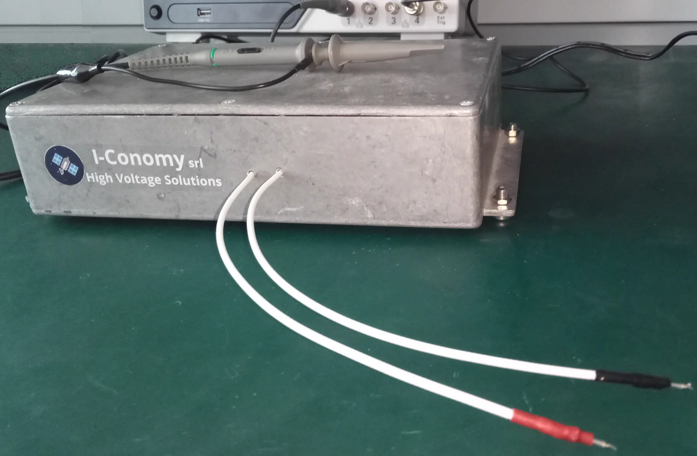
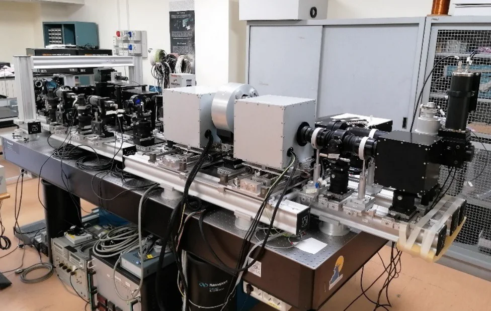
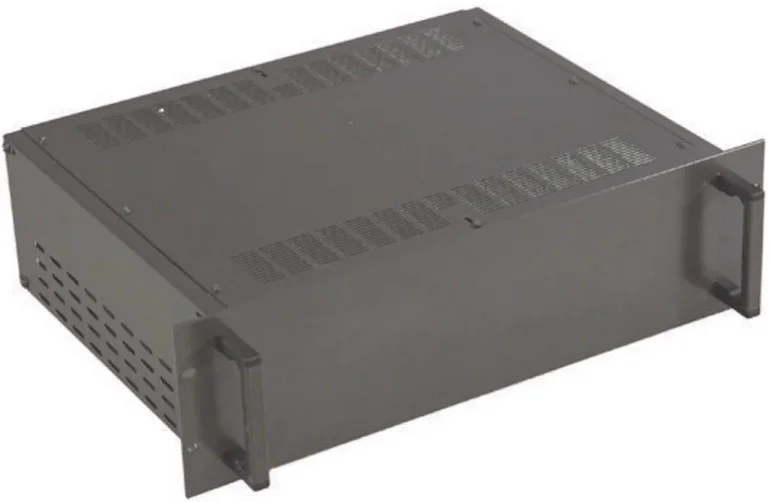

4-quadrant fast and very low noise HV power supply systems for capacitive loads.
Four quadrant fast and very low noise HV module ranging from −700 V to +700 V, tested with capacitive loads up to 25 nF. Utilised to supply the Fabry–Pérot interferometer of the new optical design conceived for the Interferometric BIdimensional Spectrometer 2.0 (IBIS 2.0), a focal plane instrument under development to acquire high cadence spectroscopic and spectropolarimetric images of the solar photosphere and chromosphere.
IBIS 2.0 experiment site at ibis20.inaf.it.
High Voltage 4-quadrant power supply for fast, high-precision piezoelectric actuators.


Figure 1: IBIS 2.0 with new optical configuration mounted on the optical bench of the laboratory at INAF – Osservatorio Astronomico di Roma.
Piezoelectric actuators facilitate precise positioning at subnanometer accuracies. For specific applications, specialised four-quadrant high-voltage power supplies are required. These power supplies are capable of both supplying and absorbing current, featuring negative to positive output voltages characterised by very low noise and, at times, high slew rates.
I-Conomy specialises in the design and manufacture of cutting-edge custom electronics tailored to customer specifications. In this particular instance, the power supply plays a crucial role in enabling rapid scanning of frequencies emitted from a Fabry–Pérot interferometer (FPI) or etalon, an optical cavity composed of two parallel reflecting surfaces (thin mirrors). Optical waves can traverse the optical cavity only when resonating with it. The Fabry–Pérot interferometer is an integral component of the Interferometric BIdimensional Spectrometer 2.0 (IBIS 2.0).
In the event of noise affecting the power supply for the piezoelectric actuator, the output frequency becomes unstable. Given the necessity for swift scans of output frequencies, voltage changes must occur within milliseconds. The Interferometric BIdimensional Spectrometer 2.0 (IBIS 2.0) is a focal plane instrument developed for acquiring high-cadence spectroscopic and spectropolarimetric images of the solar photosphere and chromosphere.
IBIS 2.0 is anticipated to exhibit a high level of stability in imaging spectropolarimetry, with consistently repeatable performance. This characteristic holds significant utility for various scientific objectives, including:
IBIS 2.0 is planned to be utilised in coordinated observing campaigns alongside ground-based and space telescopes. This collaborative approach aims to capitalise on the complementary features of IBIS 2.0 with other existing and upcoming instruments dedicated to solar studies.
To effectively address the outlined scientific requirements, IBIS 2.0 incorporates a minimum field of view (FOV) of approximately 60” × 60” and achieves a spatial resolution of about 0”.16. A key technical attribute enabling satisfaction of scientific objectives is the instrument’s wide flexibility in spectral sampling, allowing the use of varying numbers of points along each line and different steps. Two primary observation modes are mandated for each wavelength scan: a sequential scan of spectral lines, capturing one image for each spectral point, and the option to capture multiple images at the same spectral points for each step. Furthermore, it is imperative to ensure the capability to sample more than one spectral line during an observing run, both sequentially and through repeated scans of each line before transitioning to the next one.
Currently, these power supplies are used primarily in large ground-based telescopes. However, it is important to note that the project was conceived with a specific focus on potential applications in space. The components of these power supplies are selected from those that are radiation-resistant, and qualification tests — including thermal, vibrational, and radiation resistance tests at module level — will be conducted shortly.
IBIS 2.0 will be installed at the Osservatorio del Roque de Los Muchachos in the Canary Islands.

If the desired voltage is not present in our catalogue, we are ready to propose you a customised solution in a limited time at competitive prices, both for ground and space applications.
Please specify your customisation requirement by filling the form: